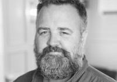

Gunnar Storøyen
M, #86804, f. 28 januar 1943, d. 28 september 1995
Foreldre
Biografi
Gunnar Storøyen ble født den 28 januar 1943 på/i Harran, Grong, Nord-Trøndelag. Han døde den 28 september 1995 på/i Flora, Sogn og Fjordane. Han ble gravlagt den 4 oktober 1995 på/i Florø kirkegård, Flora, Sogn og Fjordane.
| Sist redigert |
26 desember 2018 00:00:00 |
| Slektskap | 6-menning 2 ganger forskjøvet til Håkon Wahl |
Signe Birgitte Welde
K, #86805, f. 14 november 1878, d. 25 mars 1963
Foreldre
Biografi
Signe Birgitte Welde ble født den 14 november 1878 på/i Malmo, Malm, Verran, Nord-Trøndelag. Hun giftet seg med
Jakob Ingvard Leonard Petersen Heimsnes den 9 oktober 1906 på/i Nidarosdomen, Trondheim, Sør-Trøndelag. Hun døde den 25 mars 1963 på/i Snåsa, Nord-Trøndelag. Hun ble gravlagt den 1 april 1969 på/i Snåsa kirkegård, Snåsa, Nord-Trøndelag.
Signe Birgitte Welde was also known as Signe Birgitte Heimsnes.
| Sist redigert |
27 desember 2018 00:00:00 |
Håkon Welde
M, #86806, f. 17 juli 1850, d. 15 januar 1920
Biografi
Håkon Welde ble født den 17 juli 1850 på/i Velde nedre, Beitstad, Steinkjer, Nord-Trøndelag. Han giftet seg med
Bertha Olsdatter Malmo den 29 oktober 1874 på/i Beitstad, Steinkjer, Nord-Trøndelag. Han døde den 15 januar 1920 på/i Snåsa, Nord-Trøndelag.
| Sist redigert |
27 desember 2018 00:00:00 |
Bertha Olsdatter Malmo
K, #86807, f. 15 januar 1855, d. 4 januar 1908
Foreldre
Familie: Håkon Welde (f. 17 juli 1850, d. 15 januar 1920)
Biografi
Bertha Olsdatter Malmo ble født den 15 januar 1855 på/i Malm, Verran, Nord-Trøndelag. Hun giftet seg med
Håkon Welde den 29 oktober 1874 på/i Beitstad, Steinkjer, Nord-Trøndelag. Hun døde den 4 januar 1908 på/i Snåsa, Nord-Trøndelag.
Bertha Olsdatter Malmo was also known as Bertha Welde.
| Sist redigert |
27 desember 2018 00:00:00 |
Erling Heimsnes
M, #86808, f. 8 mars 1910, d. 23 april 1978
Foreldre
Biografi
Erling Heimsnes ble født den 8 mars 1910 på/i Snåsa, Nord-Trøndelag. Han døde den 23 april 1978 på/i Snåsa, Nord-Trøndelag. Han ble gravlagt den 29 april 1978 på/i Snåsa kirkegård, Snåsa, Nord-Trøndelag.
| Sist redigert |
27 desember 2018 00:00:00 |
| Slektskap | 6-menning 2 ganger forskjøvet til Håkon Wahl |
Bergljot Hjørdis Heimsnes
K, #86809, f. 7 oktober 1907, d. 15 august 2002
Foreldre
Biografi
Bergljot Hjørdis Heimsnes ble født den 7 oktober 1907 på/i Snåsa, Nord-Trøndelag. Hun giftet seg med
John Eivind Johnsen Solli. Hun døde den 15 august 2002 på/i Asker, Akershus. Hun ble gravlagt den 21 august 2002 på/i Asker kirkegård, Asker, Akershus.
Bergljot Hjørdis Heimsnes was also known as Bergljot Hjørdis Solli.
| Sist redigert |
27 desember 2018 00:00:00 |
| Slektskap | 6-menning 2 ganger forskjøvet til Håkon Wahl |
John Eivind Johnsen Solli
M, #86810, f. 30 oktober 1889, d. 10 mars 1978
Biografi
John Eivind Johnsen Solli ble født den 30 oktober 1889. Han giftet seg med
Bergljot Hjørdis Heimsnes. Han døde den 10 mars 1978 på/i Nesbru, Asker, Akershus.
| Sist redigert |
27 desember 2018 00:00:00 |
John Birger Solli
M, #86811, f. 3 februar 1934, d. 9 mars 1989
Foreldre
Biografi
John Birger Solli ble født den 3 februar 1934 på/i Grong, Nord-Trøndelag. Han døde den 9 mars 1989.
| Sist redigert |
27 desember 2018 00:00:00 |
| Slektskap | 7-menning 1 gang forskjøvet til Håkon Wahl |
Solveig Jorid Heimsnes
K, #86812, f. 29 mai 1913, d. 11 juli 1982
Foreldre
Biografi
Solveig Jorid Heimsnes ble født den 29 mai 1913 på/i Snåsa, Nord-Trøndelag. Hun giftet seg med
Jorleif Benny Smalås den 12 oktober 1940. Hun døde den 11 juli 1982 på/i Namsos, Nord-Trøndelag. Hun ble gravlagt den 16 juli 1982 på/i Namsos kirkegård, Namsos, Nord-Trøndelag.
Solveig Jorid Heimsnes was also known as Solveig Jorid Smalås. Hun ble døpt den 27 juli 1913 på/i Snåsa, Nord-Trøndelag. Hun ble konfirmert den 26 mai 1929 på/i Snåsa, Nord-Trøndelag.
| Sist redigert |
4 januar 2022 00:00:00 |
| Slektskap | 6-menning 2 ganger forskjøvet til Håkon Wahl |
Jorleif Benny Smalås
M, #86813, f. 4 mars 1917, d. 20 juni 1982
Biografi
Jorleif Benny Smalås ble født den 4 mars 1917. Han giftet seg med
Solveig Jorid Heimsnes den 12 oktober 1940. Han døde den 20 juni 1982 på/i Namsos, Nord-Trøndelag. Han ble gravlagt den 29 juni 1982 på/i Namsos kirkegård, Namsos, Nord-Trøndelag.
| Sist redigert |
4 januar 2022 00:00:00 |
Solbjørg Oddrun Smalås
K, #86814, f. 3 januar 1942, d. 2 juni 2003
Foreldre
Biografi
Solbjørg Oddrun Smalås ble født den 3 januar 1942 på/i Skorovatn, Namsskogan, Nord-Trøndelag. Hun giftet seg med
Einar Grande. Hun døde den 2 juni 2003. Hun ble gravlagt på/i Trones kirkegård, Namsskogan, Nord-Trøndelag.
Solbjørg Oddrun Smalås was also known as Solbjørg Oddrun Grande.
| Sist redigert |
4 januar 2022 00:00:00 |
| Slektskap | 7-menning 1 gang forskjøvet til Håkon Wahl |
Einar Grande
M, #86815, f. 23 oktober 1930, d. 6 januar 2001
Foreldre
Biografi
Einar Grande ble født den 23 oktober 1930 på/i Overhalla, Nord-Trøndelag. Han giftet seg med
Solbjørg Oddrun Smalås. Han døde den 6 januar 2001. Han ble gravlagt på/i Trones kirkegård, Namsskogan, Nord-Trøndelag.
| Sist redigert |
4 januar 2022 00:00:00 |
| Slektskap | 9-menning 1 gang forskjøvet til Håkon Wahl |
Thomas Strømmen
M, #86821, f. 15 august 1999, d. 20 desember 2018
Foreldre
| Far | Jøran Strømmen (f. 12 oktober 1970) |
| Mor | Inger Lise Løkkemo (f. 7 januar 1974) |
Biografi
Thomas Strømmen ble født den 15 august 1999. Han døde den 20 desember 2018. Thomas valgte selv å forlate livet. Han ble gravlagt den 10 januar 2019 på/i Vemundvik kirkegård, Namsos, Nord-Trøndelag.
| Sist redigert |
16 juli 2022 22:54:59 |
| Slektskap | 6-menning 2 ganger forskjøvet til Håkon Wahl
5-menning 2 ganger forskjøvet til Lovise Julie Eggan |
Nils Andrè Williksen
M, #86822, f. 7 juli 1980, d. 27 januar 2026
Foreldre
| Far | Nils Martin Williksen (f. 18 mars 1955) |
| Mor | Aud Ingrid Larsen (f. 10 januar 1955, d. 26 desember 2018) |
Familie: Viktoria Therese Wahl (f. 30 juni 1987)
| Datter | Ingrid Edvarda Williksen (f. 2009) |
| Datter | Karen Othelie Williksen (f. 22 oktober 2011) |

Nils-Andre-Williksen-1980-2026
Biografi
Nils Andrè Williksen ble født den 7 juli 1980. Han døde den 27 januar 2026 på/i Rørvik, Nærøysund, Trøndelag.
Nils Andrè Williksen ble bisatt den 11 februar 2026 Rørvik kirke, Nærøysund, Trøndelag. Williksen var en sentral og visjonær leder for sjømat i Williksen–konsernet. Han var en av initiativtakerne til dagens konsernstruktur, som i dag inkluderer fiskeri, havbruk, eiendom og entreprenørvirksomhet. Hans engasjement har vært avgjørende for selskapets posisjon og utvikling. Han innehadde også flere styreverv i konsernets selskaper.
Lokalt var Nils André Williksen også en drivkraft i regionens kulturliv, både som utøver og som støttespiller for andre. Etableringen av Kork Vinbar & Scene var et av mange bidrag for å skape bo og blilyst i Nærøysund. Sammen med engasjementet i Rørvikdagan bidro Kork til å gjøre Rørvik og Ytre Namdal til gjenstand for nasjonal omtale og oppmerksomhet.
| Sist redigert |
3 februar 2026 11:20:59 |
| Slektskap | 7-menning 1 gang forskjøvet til Håkon Wahl |
{kind=link}